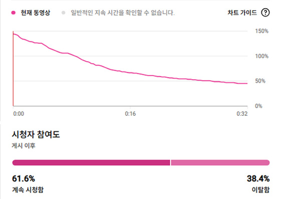

편집 방식 선택
고객이 원하는 결과에 따라 편집 범위가 달라집니다.
빠르게 업로드할 영상인지, 시청 유지까지 고려할 영상인지에 따라 선택하면 됩니다.
기본 전달형 편집은 빠르게 완성하는 방식이고,
몰입 연출형 편집은 시청 이탈을 줄이기 위한 연출까지 포함한 방식입니다.
실제 시청 유지 데이터
단순 컷편집이 아니라, 시청자가 끝까지 보게 만드는 흐름을 기준으로 편집합니다.

Retention Proof
32초 쇼츠 기준
평균 시청 지속 시간 24초
61.6%
계속 시청함
24초
평균 시청 지속 시간
약 75%
전체 길이 대비 유지
초반 이탈을 줄이고, 후반까지 시청 흐름이 이어지도록 훅·자막 리듬·화면 전환·사운드 포인트를 함께 설계합니다.
작업 문의하기